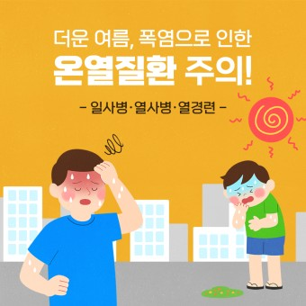
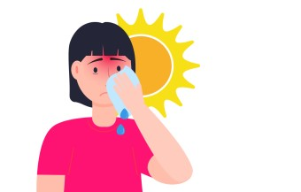

원인
- 열경련(Heat Cramps): 과다한 땀의 배출로 전해질이 고갈되어 발생하는 근육의 경련
- 일사병(Heat Exhaustion): 강한 햇볕에 장기간 노출됨으로써 혈액의 저류와 체액과 전해질이 땀으로 과다 배출되어 발생
- 열사병(Heat Stroke): 직접 태양에 노출 또는 뜨거운 차안 등에서 강한 열에 장기간 노출됨으로써 발생하며 노인, 소아, 만성질환자에게 특히 위험함.
증상
아래는 폭염에 의한 손상의 주요 증상입니다.
- 열경련(Heat Cramps): 일반적으로 다리 및 복부에서 경련의 형태로 나타남
- 일사병(Heat Exhaustion): 피부가 차갑고 끈끈하며 창백함. 현기증, 실신, 구토, 두통이 동반될 수 있음
- 열사병(Heat Stroke): 피부가 뜨겁고 건조하며 붉음. 갑자기 무의식 상태로 될 수 있음
응급처치
응급 상황에서는 빠르게 대처해야 합니다.
열경련(Heat Cramps)
- 환자를 시원한 곳으로 이동하십시오.
- 환자에게 소금물 또는 전해질(이온음료)음료를 마시게 하십시오.
- 편하게 휴식을 취하게 하고 경련이 있는 근육을 스트레칭 해주십시오.
- 경련이 멈춘 후 약간씩 움직이게 하십시오. 그러나
일사병(Heat Exhaustion)
- 환자를 시원한 곳으로 이동하여 휴식을 취하게 하십시오.
- 옷을 벗기고 오한이 나지 않을 정도로 신체를 서서히 냉각시키도록 하십시오.
- 의식이 있으면 소금물을 마시게 하거나 전해질(이온) 음료를 마시게 하십시오 